A guided tour of the Seaborn plotting library — every chart type, once, on a dataset chosen to show it at its best, each with a short note on when to reach for it.
How this is organised
The charts are grouped by the question you bring to your data, not by Seaborn's module layout:
| The question | Group |
|---|---|
| How do two variables move together? | 1 · Relationships |
| What is the shape of one variable? | 2 · Distributions |
| How do groups compare? | 3 · Comparing categories |
| What structure is there across many variables? | 4 · Matrices & correlation |
| One view repeated across subsets? | 5 · Multiples & grids |
| Building a plot from composable parts | 6 · The objects interface |
This maps loosely onto Seaborn's own API sections, but the entry point is always "which chart answers my question", never "which module is it in".
Taxonomy, not recipe book
Seaborn's own example gallery is a recipe book: about 49 finished plots, each titled by how the result looks ("Scatterplot with varying point sizes"), with the same function recurring whenever a new styling trick is worth showing. It is where you go when you already know the chart you want.
This is a taxonomy. Each Seaborn plotting function appears exactly once, in the group that matches the question it answers, with a "best for" note covering the data shape it expects and when not to use it. The gallery's ~49 thumbnails cover about 25 functions; the ~40 figures here cover all 27 plotting functions plus the seaborn.objects grammar — no repeats.
Browse here to choose a chart; raid the gallery for styling.
What is inside
27 classic plotting functions across five groups, plus 10 seaborn.objects compositions in the sixth — about 40 worked examples. Every figure and code snippet on this site is generated from the Jupyter notebooks in the repository; edit a notebook, rerun build_site.py, and this site updates.
1 · Relationships between variables
how do two variables move together — and how well does a fitted model describe that relationship?
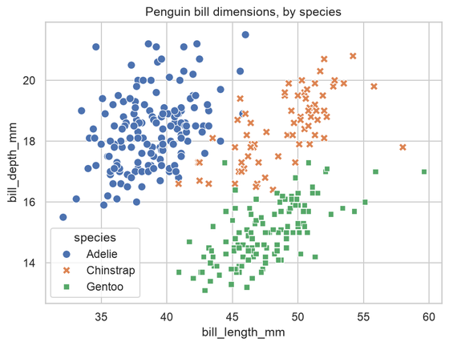
scatterplotraw points: the relationship between two numeric variables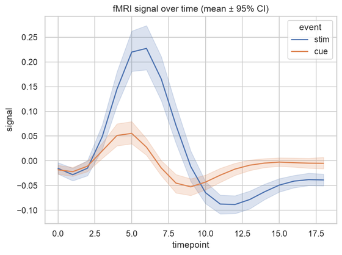
lineplota trend along an ordered axis, with a confidence band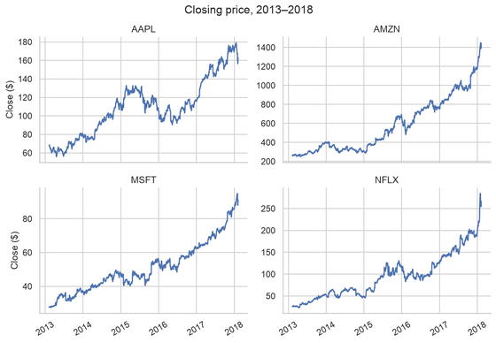
relplotscatter / line split into small multiples by a category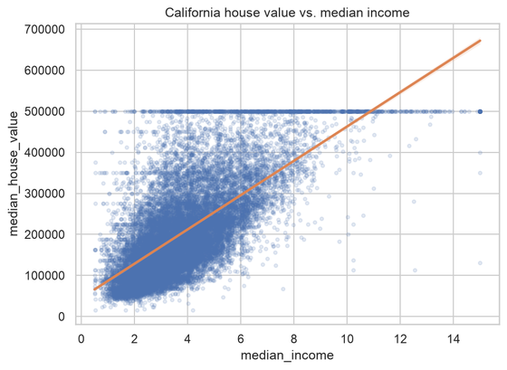
regplota scatter with a fitted regression line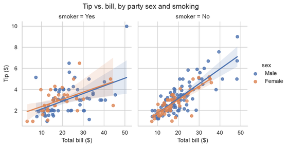
lmplotfaceted regression across subsets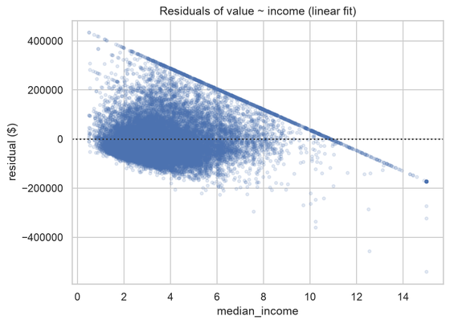
residplotresiduals of a fit — is the model adequate?2 · Distributions
what is the shape, centre and spread of a single variable — and how does that differ from group to group?
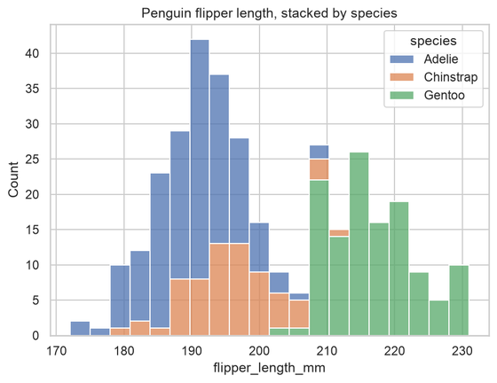
histplotbinned counts: the classic histogram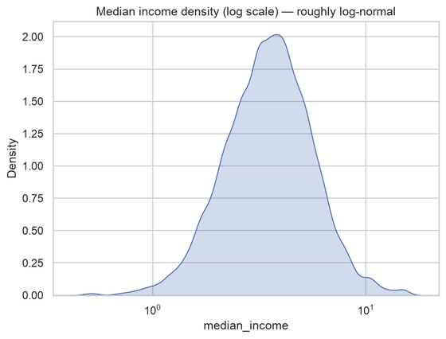
kdeplota smooth density estimate (1-D or 2-D)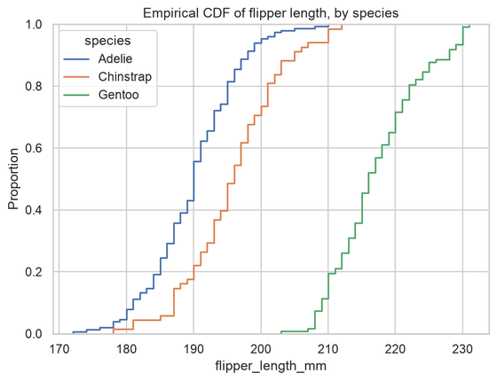
ecdfplotthe empirical cumulative distribution — no bins, no smoothing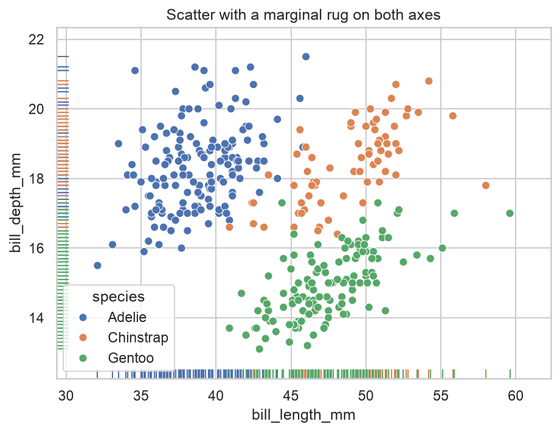
rugplottick marks for individual observations, layered under another plot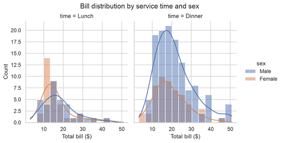
displotany of the above, faceted across subsets3 · Comparing a quantity across categories
how does a measure — its average, its whole distribution, or just the count — differ between groups?
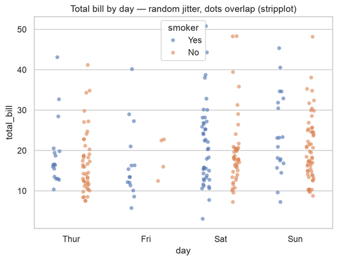
stripplotevery observation as a point, random jitter (dots overlap)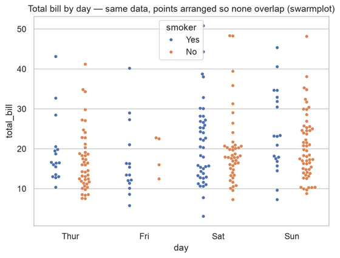
swarmplotsame data, points arranged so none overlap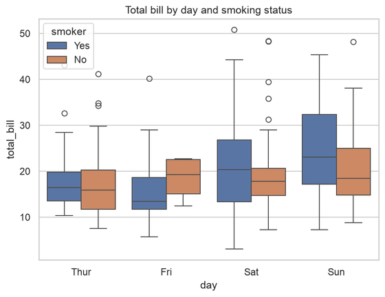
boxplotmedian, quartiles and outliers per category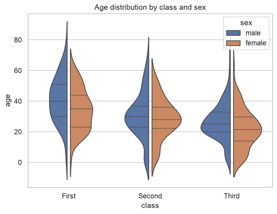
violinplota mirrored KDE — the full distribution shape per category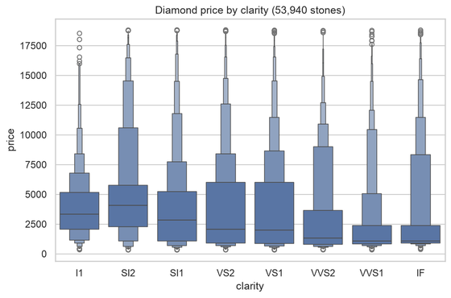
boxenplotlike a boxplot but resolves the tails (large samples)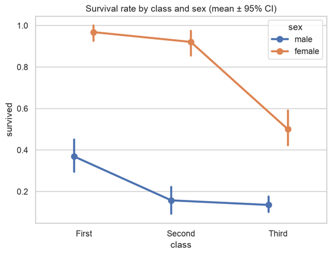
pointplotan estimate per category joined by lines, to read the trend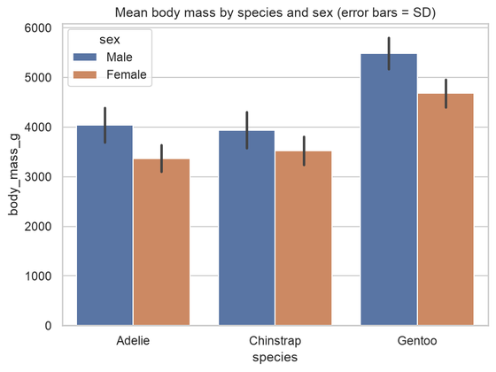
barplotan aggregate (mean by default) per category, with error bars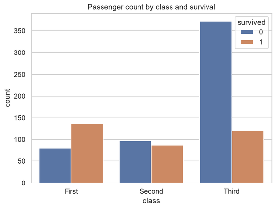
countplothow many rows fall in each category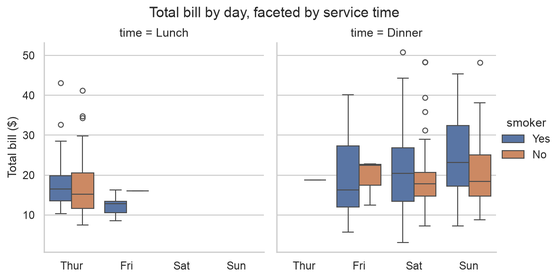
catplotany of the above, faceted across subsets4 · Matrices & correlation
what structure is there across a two-way grid of values, or across many variables at once?
5 · Small multiples & multi-variable grids
what happens when the same view is repeated across subsets of the data — or when you want every pairwise view of several variables at once?
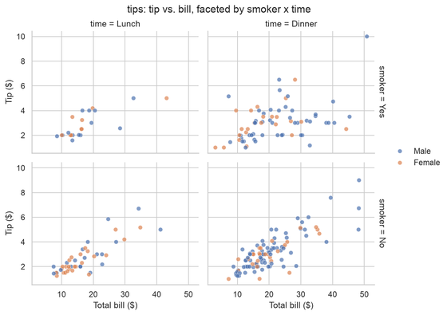
FacetGridhand-built grid: `.map()` any plot across rows / columns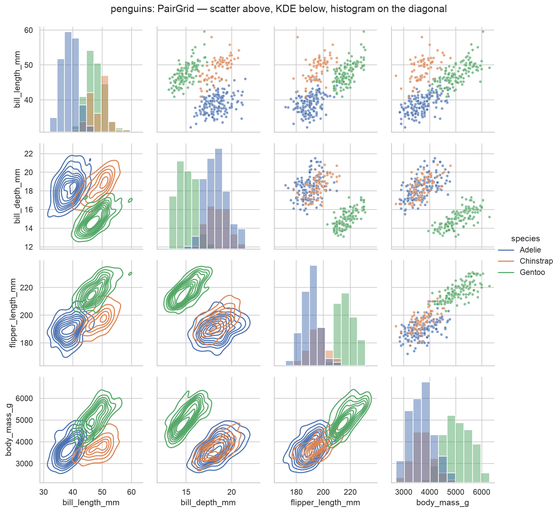
PairGridevery variable vs every other, different plot per region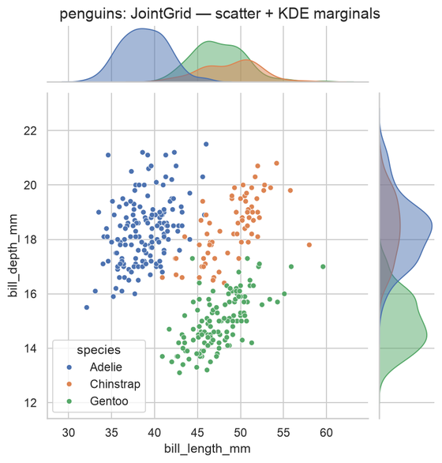
JointGrida bivariate plot plus its marginal distributions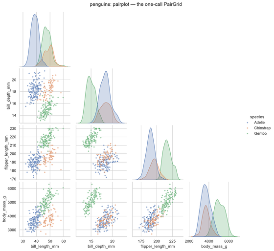
pairplotthe one-call version of `PairGrid`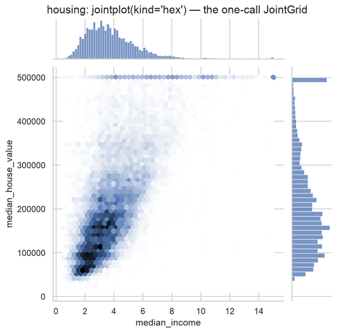
jointplotthe one-call version of `JointGrid`6 · The objects interface (seaborn.objects)
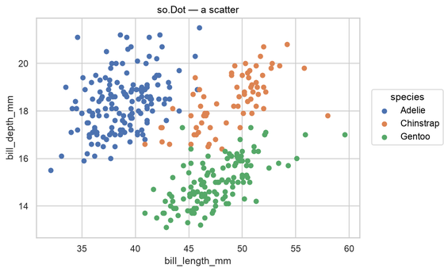
so.Dota scatter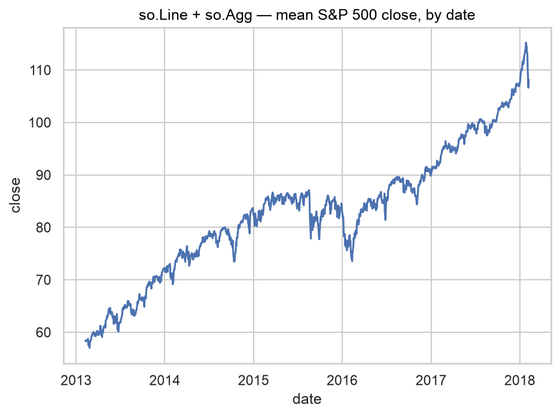
so.Line + so.Aggan aggregated trend line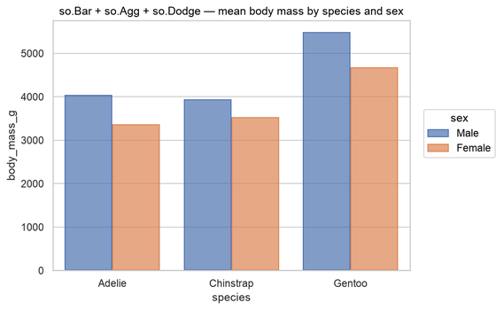
so.Bar + so.Agg + so.Dodgegrouped bars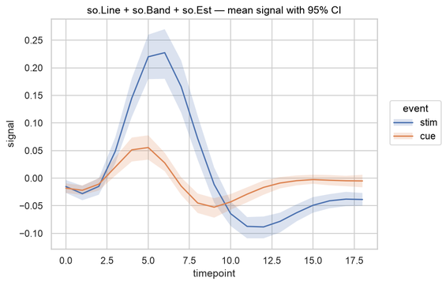
so.Line + so.Band + so.Esta line with a confidence band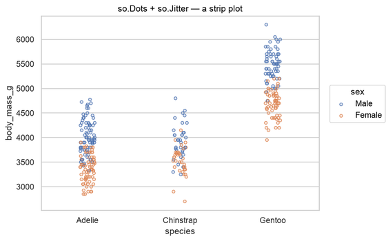
so.Dots + so.Jittera strip plot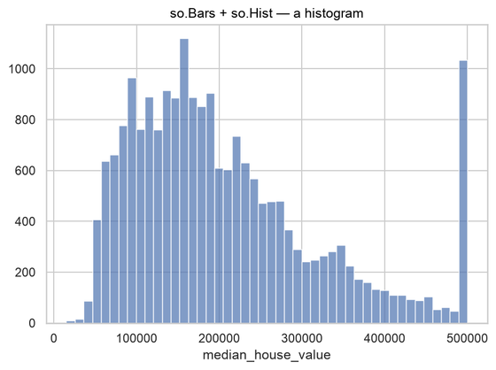
so.Bars + so.Hista histogram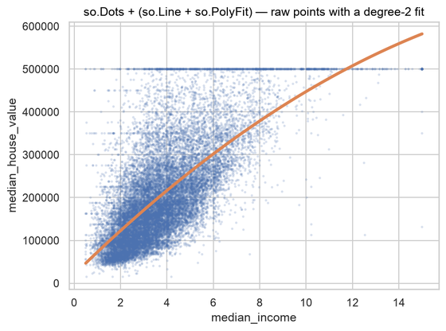
so.Dots + (so.Line + so.PolyFit)a regression fit over raw points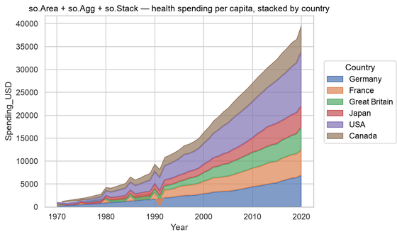
so.Area + so.Agg + so.Stacka stacked area chart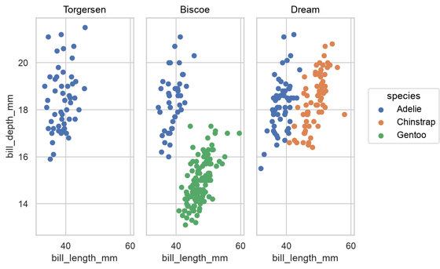
.facet(col=…)small multiples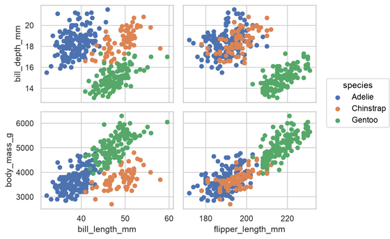
.pair(…) and so.Texta scatter matrix; labelled points